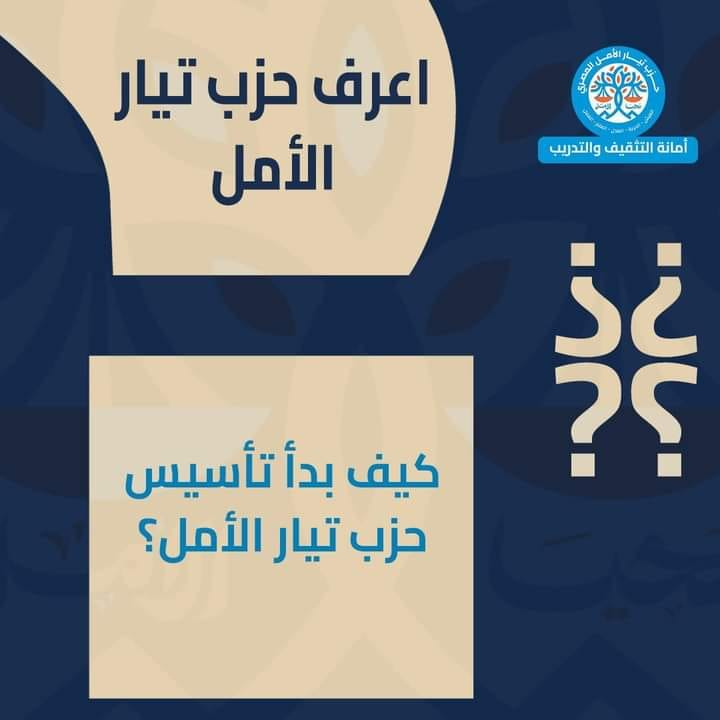

حين بدأنا الحملة الإنتخابية الرئاسية بشعار يحيا الأمل؛ أبصرنا حينها العزم وهو ينبض في خطوات حراس الأمل. تعلمنا منهم وهم يحاولون بصدق وشجاعة إنتزاع حقهم في ترشيح
أحمد الطنطاوي
الذي ارتضوه لبناء الدولة المدنية الديمقراطية، دولة القانون والمؤسسات. أبهرنا وقوف السيدات والسادة المواطنين المقيمين خارج مصر في صفوف طويلة؛ ينتظرون دورهم في تحرير توكيلات الرئاسة، وهم يهتفون يحيا الأمل رافعين شارات النصر، قاطعين مئات الكيلومترات من مدنهم وحتى مقرات السفارات والقنصليات. ألهمنا عشرات آلاف البطلات والأبطال الذين تطوعوا ليكونوا أعضاء فاعلين بالحملة الإنتخابية وليسوا فقط مؤيدين أو داعمين. ولن ننسى أبدا نضال المواطنين العظماء أمام مقرات الشهر العقاري، مغامرين بسلامتهم، باذلين وقتهم وجهدهم طواعية وهم يقفون بالساعات والأيام الطويلة أمامها؛ أملاً في تحرير توكيل للرئاسة، أو بالأحرى للمستقبل الذي أخرته السلطة -لبعض الوقت- بالقمع والمنع.
كانت نتيجة بطش السلطة خارج نطاق القانون هي حرمان الشعب المصري من حقه في اكتمال حملة الأمل للترشح لرئاسة الجمهورية، بينما النتيجة التي اختارها حراس الأمل هي إكمال مشروع البديل المدني الديمقراطي بيقين وإصرار.
إسترشدنا بآراء أساتذة من المناضلين والسياسيين في لجنة الحكماء التي قدمت الرأي والمشورة لحملة الأمل ولمرشحها
أحمد الطنطاوي،
واجتمعنا أيضا مع أعضاء الحملة المتطوعين من المستقلين والمنتمين للأحزاب من مختلف الإتجاهات الفكرية، ثم أطلقنا استبيانا للرأي شارك فيه -في أقل من يومين- أكثر من ثمان عشرة ألف مواطن، وكانت الأغلبية العظمى من كل الآراء والمشاورات، منحازة لأن يتجسد الشكل الجديد لمشروع الأمل في حزب قادر على تنظيم واستثمار كل مهارات وقدرات حراس الأمل، منطلقين من الانتماءات السياسية المتنوعة، عابرين بها ولها في سبيل الانتصار لقيمنا العليا الجامعة: العيش، والحرية، والعدل، والعلم، والعمل.